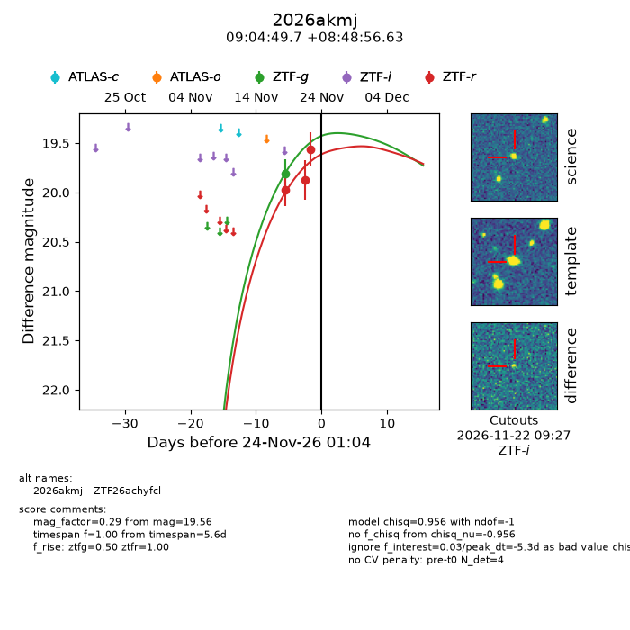
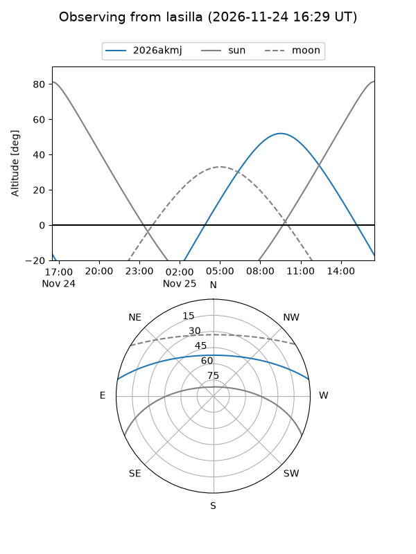
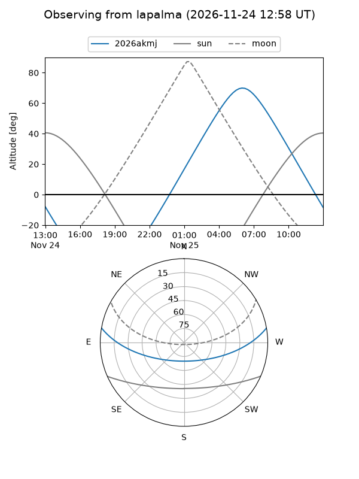
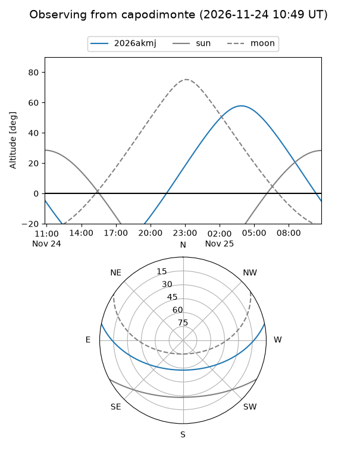
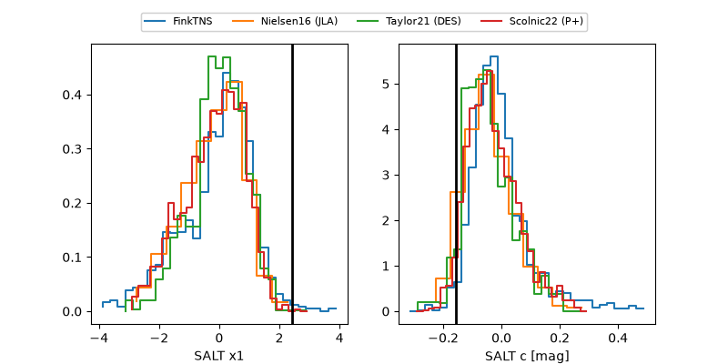

2026akmj
Target 2026akmj at 2026-11-24 12:51
Aliases and brokers:
FINK-ZTF: ztf.fink-portal.org/ZTF26achyfcl
Lasair-ZTF: lasair-ztf.lsst.ac.uk/objects/ZTF26achyfcl
ALeRCE-ZTF: alerce.online/object/ZTF26achyfcl
YSE-PZ: ziggy.ucolick.org/yse/transient_detail/2026akmj
TNS name: wis-tns.org/object/2026akmj
Direct TNS query: direct search
alt names
ZTF26achyfcl (ztf,fink_ztf)
2026akmj (tns,yse)
Coordinates:
equatorial (ra, dec) = 136.2070,+8.81573
equatorial (HMS+DMS) = 09:04:49.68,+08:48:56.63
galactic (l, b) = (220.6110,+33.59669)
Flags:
peak dt: -4.8
Photometry:
last ztfg=19.81, ztfr=19.56
1 ztfg, 3 ztfr detections
Lightcurve

Visibility



Additional plots
